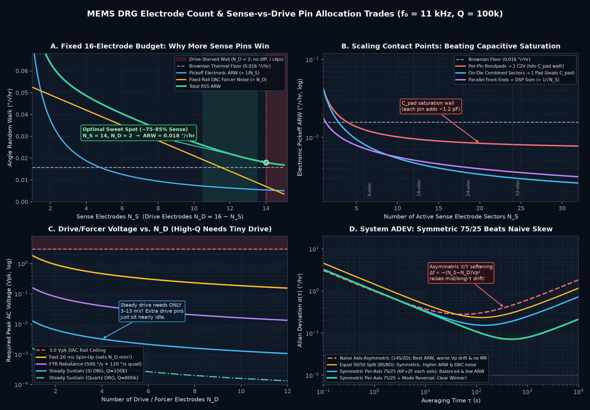

How scaling from 8 → 16 → 24 → 32+ electrodes improves a 2D wineglass gyro, why more sense pins win decisively on high-Q resonators, and the 4 subtle engineering traps (Cpad saturation, DAC clipping, feedthrough, and X/Y softening asymmetry) that define the true optimum.
1. Yes — More Sense Pins Win (Usually ~70–85% Pickoff / 15–30% Forcer): On a high-Q DRG or HRG (Q = 100k–5M), the resonator is an enormous mechanical amplifier on the drive side. Sustaining full linear amplitude (xmax) takes only a few millivolts on 1 differential drive pair! Every extra drive electrode past the minimum sits nearly idle — whereas every extra sense electrode directly lifts tiny femto-amp Coriolis currents out of TIA/C2V thermal & 1/f noise.
2. The Bonus Most People Miss (Smaller Forcers = Quieter DACs!): If your forcer DAC has a fixed voltage rail & noise floor (eDAC), over-provisioning drive/FTR electrodes actually amplifies DAC voltage noise into mechanical force noise (Fn = ND · η0 · eDAC). Shrinking drive pins down toward the minimum needed for full-scale spin rate & fast startup makes both pickoff SNR and DAC force noise better at the same time!
3. The Crucial Architectural Twist — Skew Pickoff vs. Forcer, NOT Sense-Axis vs. Drive-Axis: If you naively put 14 electrodes on the 45° Sense axis and only 2 on the 0° Drive axis, electrostatic softening (Δf ∝ −(NS−ND)Vp²) creates a voltage-sensitive mode split and kills Mode Reversal. The gold-standard fix is symmetric X & Y axes where each axis is split ~75% Pickoff / ~25% Forcer (with sectors combined on-die to avoid paying the Cpad bondpad tax).
Dial the total contact count, sense/drive split, front-end wiring, and layout symmetry below. Watch the live n=2 DRG electrode ring, ARW tradeoff curve, DAC clip margin, and Mode-Reversal compatibility update in real time.
Before splitting pins between Sense and Drive, why does having more total electrodes / contact points around an n=2 DRG (outer rim + nested interior rings) or HRG hemisphere help so much?
Every parallel electrode arc or inner-ring finger adds capacitive area A, boosting electromechanical coupling η = Vp(∂C/∂x) = VpC0/d0 linearly. More area means bigger motional current is = η·˙y per picometer of Coriolis deflection.
Going from 4 to 8+ pins unlocks true differential pairs (0°/180° vs. 90°/270°). Push-pull cancels common-mode electrical feedthrough, suppresses 2nd-order electrostatic force nonlinearity (x²), and rejects external n=1 linear vibration / shock.
A 4- or 8-electrode ring has coarse angular sampling that leaks drive energy into parasitic n=0, 1, 3, 4 modes. Packing 16–32 discrete sectors around 360° acts as a spatial matched filter for cos(2θ) and sin(2θ) while staying orthogonal to parasitic modes.
High-pin-count packages (24–44 pin LCC) let you dedicate separate electrodes to DC quadrature nulling (22.5°), DC mode-matching (0°/45°), and grounded AC guard pins separating Drive from Sense (cutting parasitic feedthrough Cft by 20–40 dB).
Simulated for our calibrated Silicon DRG baseline (f0 = 11 kHz, Q = 100k, meff = 2 mg, d0 = 2 μm, Vp = 15 V, xmax = 0.30 μm, Brownian floor 0.0157 °/√hr):

model/plot_electrode_trades.py: (A) Fixed 16-electrode budget optimal split, (B) On-die combining vs. Cpad saturation wall, (C) Drive/FTR voltage needed vs. ND, and (D) System ADEV comparing naive skew vs. symmetric per-axis 75/25 + Mode Reversal.Knowing why more sense pins win is step 1; knowing where that rule breaks down is what separates a good layout from a navigation-grade one:
Cpad Tax)In a Charge Amplifier (C2V), input-referred displacement noise scales with total capacitance on the summing node: yn ∝ en · [Cpar + NS(C0 + Cpad)] / NS. If you route NS separate resonator electrodes out to NS separate bondpads/package pins and short them together at ONE PCB op-amp, every pin adds ~1–1.5 pF of ESD/pad/trace capacitance — causing SNR to hit a flat asymptote (red curve in Panel B)!
1× Cpad instead of NS× Cpad (blue curve in Panel B) — or use parallel front-ends summed in DSP (1/√NS scaling at higher power).ND,min)Steady-state drive only needs millivolts, so it's tempting to shrink drive/forcer down to 1 tiny finger. Don't! Your minimum forcer count ND,min is set by the worst-case transient, not steady state: (a) fast spin-up from rest to xmax in <20–50 ms, (b) closed-loop FTR rebalancing ±300–1000 °/s bursts + 120 °/s quadrature without clipping a 3.3 V / 10 V DAC, and (c) keeping ND ≥ 2 per axis for differential push-pull cancellation.
ND to hit ~60–80% of DAC full scale at your worst-case Ωmax / startup spec (typically 15–25% of electrode area, i.e., 1 differential pair per axis), then give the remaining 75–85% to Pickoff!Every electrode biased at Vp adds negative electrostatic spring stiffness ke = −Naxisϵ0A0Vp²/d0³. If you naively allocate 14 electrodes to the 45° Sense axis and only 2 to the 0° Drive axis, the Sense axis softens much more than Drive, creating a built-in frequency split Δfe ∝ −(NS−ND)Vp²! Any microvolt drift in Vp now shifts Δf (raising mid/long-τ bias drift in Panel D) — and you can no longer run Mode Reversal because swapping axes would drop you to a terrible 2-pin pickoff!
Vp softening split, and full Mode-Reversal / Whole-Angle compatibility!ift = jω0 Cft vdrive)Shrinking ND by 4× forces your AC drive/FTR voltage vdrive up by 4× to deliver the same force. While on-die overlap scales down, pin-to-pin package mutual capacitance Cft,pkg does not — so a single high-voltage drive pin next to a sense pin can actually inject more electrical feedthrough bias.
+v and −v cancel far-field E-fields), and use HF-carrier pickoff modulation so feedthrough at f0 falls outside the carrier passband.How the Symmetric Per-Axis 75/25 + On-Die Combining + Guard Shield recipe maps cleanly onto real LCC ceramic vacuum packages:
| Package Class | Axis 1 (0°/90°) | Axis 2 (45°/135°) | DC Trim & Proof Mass | Guard / Shield | Best Use Case |
|---|---|---|---|---|---|
| 16-Pin Minimal | 2 Pickoff (+ / −, 75% die area)2 Forcer ( + / −, 25% area) |
2 Pickoff (+ / −, 75% die area)2 Forcer ( + / −, 25% area) |
1 Vp mass + 3 DC tune/quad |
4 GND guards | Compact tactical DRG; on-die combining unlocks 75/25 SNR in 16 pins |
| 24-Pin Sweet Spot | 4 Pickoff (2 diff pairs or on-die) 2 Forcer (diff pair) |
4 Pickoff (2 diff pairs or on-die) 2 Forcer (diff pair) |
2 Vp (Kelvin) + 4 DC quad/freq (22.5°) |
6 GND guards | High-precision DRG with full DC mode-match, quad trim & Mode Reversal |
| 32+ Pin Nav-Grade | 6 Pickoff (parallel TIAs or wide on-die) 2 Forcer (diff pair) |
6 Pickoff (parallel TIAs or wide on-die) 2 Forcer (diff pair) |
2 Vp + 6 fine DC trim + 2 temp/getter |
8+ coaxial GND guards | Nav-grade Quartz DRG / Micro-HRG (≤0.01 °/hr) & Whole-Angle HRG |